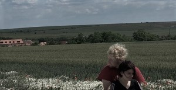

Vojtik
-
kytara, baskytara, akordeon, ukulele
-
I přes výchovu k hudbě, mě nástroje nikdy moc nenadchly. Věnovat se hudně jsem začal až zhruba na
jaře 2018, kdy jsem konečně nehrál jen protože to po mě někdo chtěl a od zimy 2018 jem dokonce jako
kytarista začal hrát v kapele The Darkroom.
Bean
-
baskytara, kytara, ukulele, klavír
-
Muzikant jsem byla tak trochu už od mala, jen bez možnosti mít nějaký nástroj. Když jsem si doma
konečně vyprosila kytaru, tak jsem místo ní dostala flétnu a po roce hrání, se doma usoudilo, že mi
nástroje nechou kupovat a tak jsem místo toho mohla jen zbytečně prosit o druhou šanci s lepším
nástrojem. Pořádně jsem se mohla začít věnovat hudbě až na podzim 2020, kdy jsem si po letech čekání
konečně pořídíla svou první kytaru.
Jak jsme se vlastně dali dohromady?
-
I když se známe roky, cestu sobě a k hudbě jsme našli poměrně pozdě. Po dlouhém čekání padlo 15. 1.
2021 finální rozhodnutí a vznikla kapela a písnička 151.

Kontakt